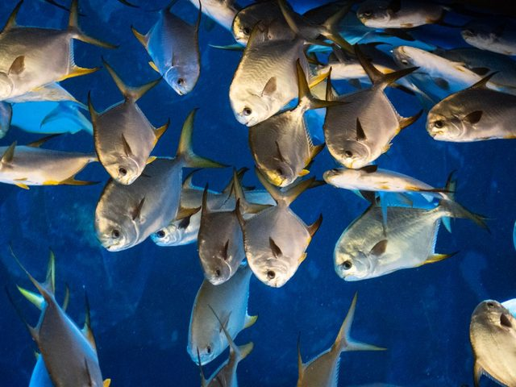
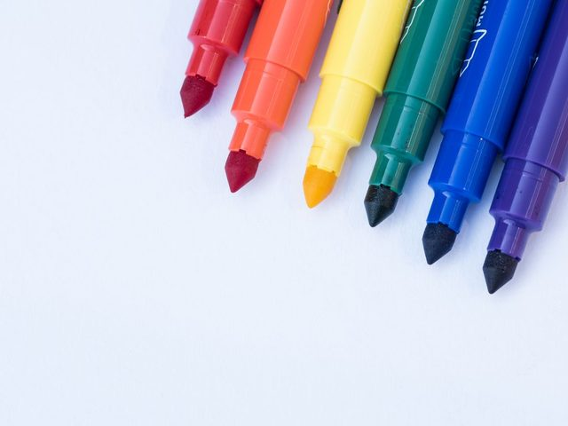
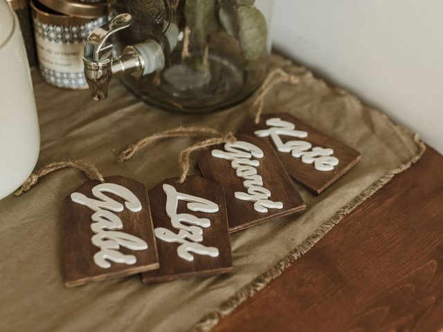
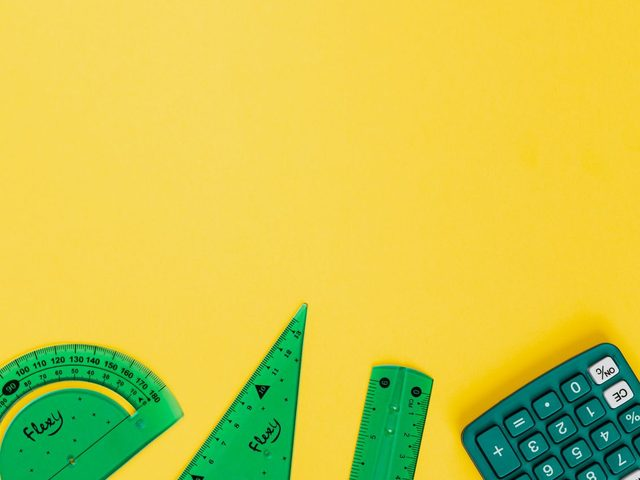
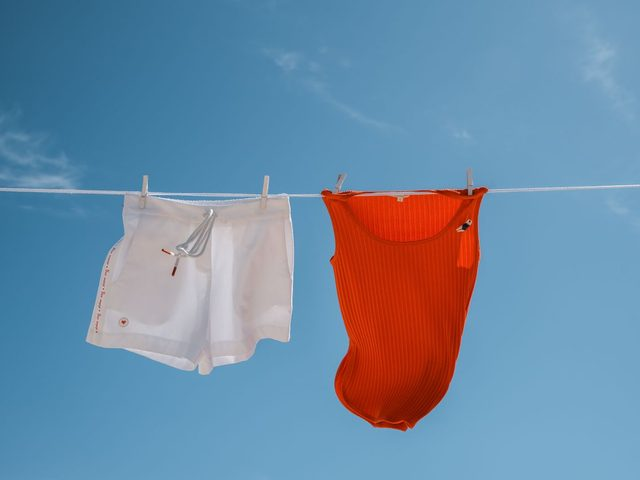
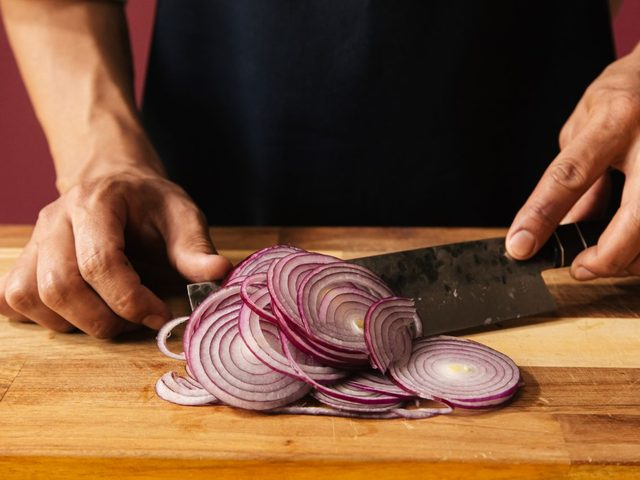

VOCABULARY · LALA WORD UNIT 1
Colors Can Talk!．一字多義（一）
同一個英文字，在不同句子裡可能有完全不同的意思：blue 是「藍色的」，也可以是「憂鬱的」；pen 是「筆」，也可以是「動物的圍欄」。先記住最常見的意思，再看例句學其他意思。前 7 個是主題單字，後 23 個是更多單字。
共 30 個單字．點 🔊 聽發音

1colorn. / v.
顏色；膚色；上色；染色
color - colored - colored - coloring
- 1n.顏色What color is your new bike?你的新腳踏車是什麼顏色？
- 2n.膚色We should never judge people by their color.我們絕不該以膚色評斷別人。
- 3v.上色；染色The kids colored the pictures with crayons.孩子們用蠟筆幫圖畫上色。
2bluen. / adj.
藍色；藍色的；憂鬱的；難過的
blue - bluer - bluest
- 1n.藍色 dark / light blue 深藍／淺藍The sea changes from light blue to dark blue.海從淺藍色變成深藍色。
- 2adj.藍色的Tom is wearing a blue cap today.Tom 今天戴一頂藍色的帽子。
- 3adj.憂鬱的；難過的I feel a little blue on rainy Mondays.下雨的星期一我覺得有點憂鬱。
- 4片語出乎意料地 out of the blue 出乎意料、突然My old friend called me out of the blue.我的老朋友突然打電話給我。

3greenadj. / n.
綠色的；草地；（複數）蔬菜；沒經驗的；生手的；環保的
green - greener - greenest
- 1adj.綠色的The leaves turn green in spring.春天葉子變綠了。
- 2n.草地；（複數）蔬菜Eat your greens, and you will grow strong.把青菜吃完，你就會長得強壯。
- 3adj.沒經驗的；生手的He is still green at his new job.他對新工作還很生疏。
- 4adj.環保的 go green 做環保Our school is trying to go green.我們學校正努力推動環保。
4roomn.
房間；空間（不可數）
- 1n.房間My room is next to the kitchen.我的房間在廚房旁邊。
- 2n.空間（不可數） make room for 騰出空間給Is there room for one more person in the car?車上還有空間再坐一個人嗎？
5penn. / v.
筆；（動物的）圍欄；圈；寫（＝write）
pen - penned - penned - penning
- 1n.筆May I borrow your pen?我可以借你的筆嗎？
- 2n.（動物的）圍欄；圈The pigs are sleeping in the pen.豬在圍欄裡睡覺。
- 3v.寫（＝write）The poet penned this poem at the age of ten.這位詩人十歲時寫了這首詩。

6notebookn.
筆記本；筆記型電腦（＝laptop）
- 1n.筆記本Write the new words in your notebook.把新單字寫在你的筆記本裡。
- 2n.筆記型電腦（＝laptop）My sister uses a notebook to do her homework.我姊姊用筆電寫作業。

7downadv. / prep. / adj. / n.
向下；降低；沿著…往下；情緒低落的；（音量）調低；羽絨
- 1adv.向下；降低 sit / lie / write down 坐下／躺下／寫下Please sit down and open your books.請坐下，把書打開。
- 2prep.沿著…往下The ball rolled down the hill.球沿著山坡滾下去。
- 3adj.情緒低落的Ben looks down because he lost the game.Ben 輸了比賽，看起來很沮喪。
- 4adv.（音量）調低 turn down 調低；拒絕Could you turn the TV down?你可以把電視轉小聲嗎？
- 5n.羽絨This down jacket keeps me warm.這件羽絨外套讓我很溫暖。
8balln.
球；舞會
- 1n.球The dog ran after the ball.狗追著球跑。
- 2n.舞會Cinderella went to the ball in a beautiful dress.灰姑娘穿著漂亮的禮服去參加舞會。
9babyn. / adj.
嬰兒；幼小的（＋動物）
baby - babies
- 1n.嬰兒The baby is sleeping. Please be quiet.寶寶在睡覺，請安靜。
- 2adj.幼小的（＋動物） baby + 動物 小…Look at the baby ducks!看那些小鴨子！

10cookv. / n.
煮；做菜；廚師（cooker 是爐具）
- 1v.煮；做菜 cook + 人 + 食物 ＝ cook + 食物 + for + 人Dad cooks dinner for us on weekends.爸爸週末煮晚餐給我們吃。
- 2n.廚師（cooker 是爐具）My uncle is a cook at a hotel.我叔叔在飯店當廚師。

11drinkv. / n.
喝；喝酒；飲料
drink - drank - drunk - drinking
- 1v.喝；喝酒Drink more water on hot days.天氣熱要多喝水。
- 2n.飲料Would you like a cold drink?你要不要來杯冷飲？

12familyn.
家庭；家人們（當複數）
family - families
- 1n.家庭There are four families in this building.這棟大樓住了四戶人家。
- 2n.家人們（當複數）My family are all early birds.我的家人都是早起的人。
13fatadj. / n.
胖的；厚的；豐厚的；脂肪；油脂
fat - fatter - fattest
- 1adj.胖的Our cat got fat after eating too much.我們的貓吃太多變胖了。
- 2adj.厚的；豐厚的He is reading a fat book about history.他在看一本很厚的歷史書。
- 3n.脂肪；油脂Fried food has a lot of fat.油炸食物有很多脂肪。
- 4片語不可能 fat chance 不可能Me, win the lottery? Fat chance!我中樂透？不可能啦！

14fineadj. / n. / v.
好的；健康的；細的；細微的；罰款；處以罰款
fine - fined - fined - fining
- 1adj.好的；健康的A: How are you? B: I'm fine, thank you.A：你好嗎？ B：我很好，謝謝。
- 2adj.細的；細微的The beach is covered with fine white sand.海灘上滿是細細的白沙。
- 3n.罰款He had to pay a fine for parking there.他在那裡停車被罰了錢。
- 4v.處以罰款The driver was fined for speeding.那位駕駛因超速被罰款。

15fishn. / v.
魚；魚肉（不可數）；釣魚；捕魚；摸索翻找
fish - fished - fished - fishing
- 1n.魚 數量多還是 fish；種類多才用 fishesThere are many fish in the pond.池塘裡有很多魚。
- 2n.魚肉（不可數）We had fish and rice for lunch.我們午餐吃魚和飯。
- 3v.釣魚；捕魚 go fishing 去釣魚Grandpa likes to go fishing by the river.爺爺喜歡去河邊釣魚。
- 4v.摸索翻找Mom fished in her bag for her phone.媽媽在包包裡翻找手機。

16giftn.
禮物（＝present）；天分；才能
- 1n.禮物（＝present）Thank you for the birthday gift!謝謝你的生日禮物！
- 2n.天分；才能 have a gift for 有…的天分Amy has a gift for music.Amy 有音樂天分。

17hungryadj.
飢餓的；渴望的
hungry - hungrier - hungriest
- 1adj.飢餓的I'm so hungry. Let's eat now.我好餓，我們現在吃飯吧。
- 2adj.渴望的 be hungry for 渴望The young player is hungry for a win.這位年輕選手渴望贏球。

18lookv. / n.
看；看起來；尋找；查閱；照顧；看一眼；（複數）長相
look - looked - looked - looking
- 1v.看 look at 看著Look at the board, please.請看黑板。
- 2v.看起來You look happy today.你今天看起來很開心。
- 3v.尋找；查閱 look for 尋找；look up 查（字典）I'm looking for my glasses.我在找我的眼鏡。
- 4v.照顧 look after 照顧Can you look after my dog this weekend?這週末你可以幫我照顧狗嗎？
- 5n.看一眼；（複數）長相 take a look 看一下Let me take a look at your homework.讓我看一下你的作業。

19markern.
麥克筆；白板筆；標記；記號
- 1n.麥克筆；白板筆The teacher wrote the answer with a red marker.老師用紅色白板筆寫下答案。
- 2n.標記；記號Follow the markers, and you won't get lost.跟著路標走，你就不會迷路。

20meetv. / n.
遇見；見面；認識；開會；達到；滿足（期限、要求）；比賽；運動會
meet - met - met - meeting
- 1v.遇見；見面Let's meet at the bus stop at nine.我們九點在公車站見面吧。
- 2v.認識Nice to meet you.很高興認識你。
- 3v.開會The class leaders meet every Friday.班長們每週五開會。
- 4v.達到；滿足（期限、要求）We worked hard to meet the deadline.我們努力工作以趕上截止日期。
- 5n.比賽；運動會 track / swim meet 田徑／游泳比賽Our school has a swim meet next week.我們學校下週有游泳比賽。

21namen. / v.
名字；命名；取名；說出；指定
name - named - named - naming
- 1n.名字 first name 名；last name 姓What's your first name?你的名字（不含姓）是什麼？
- 2v.命名；取名 be named after 以…命名They named their dog Lucky.他們把狗取名叫 Lucky。
- 3v.說出；指定Can you name three animals that live in the sea?你能說出三種住在海裡的動物嗎？

22openv. / adj.
打開；開始；開幕；開著的；營業中的
open - opened - opened - opening
- 1v.打開Please open the window. It's hot.請打開窗戶，好熱。
- 2v.開始；開幕The new park will open next month.新公園下個月開幕。
- 3adj.開著的Don't leave the door open.別讓門開著。
- 4adj.營業中的Is the bookstore open on Sundays?書店星期天有開嗎？

23rainn. / v.
雨（不可數）；下雨
rain - rained - rained - raining
- 1n.雨（不可數）We had a lot of rain last week.上週下了很多雨。
- 2v.下雨 rain hard / heavily 下大雨It's raining hard outside.外面雨下得很大。
- 3片語無論如何；風雨無阻 rain or shine 風雨無阻The game will go on, rain or shine.比賽風雨無阻照常舉行。

24ridev. / n.
騎；搭乘；搭車；車程；（遊樂園的）遊樂設施
ride - rode - ridden - riding
- 1v.騎；搭乘I ride my bike to school every day.我每天騎腳踏車上學。
- 2n.搭車；車程 give + 人 + a ride 載某人Can you give me a ride to the station?你可以載我去車站嗎？
- 3n.（遊樂園的）遊樂設施The roller coaster is the best ride in the park.雲霄飛車是樂園裡最好玩的設施。

25rulern.
尺；統治者
- 1n.尺Use a ruler to draw a straight line.用尺畫一條直線。
- 2n.統治者The king was a kind ruler.那位國王是一位仁慈的統治者。

26runv. / n.
跑；跑步；經營；運作
run - ran - run - running
- 1v.跑Don't run in the hallway.不要在走廊上奔跑。
- 2n.跑步 go for a run 去跑步Let's go for a run after school.放學後我們去跑步吧。
- 3v.經營；運作Her parents run a noodle shop.她爸媽開了一間麵店。
- 4片語用完 run out of 用完We have run out of milk.我們的牛奶喝完了。

27schooln.
學校；上學；上課時間（不可數）；（魚、海豚的）群
- 1n.學校Our school has a big library.我們學校有一間很大的圖書館。
- 2n.上學；上課時間（不可數） after school 放學後；go to school 上學Let's play basketball after school.我們放學後去打籃球吧。
- 3n.（魚、海豚的）群 a school of fish 一群魚A school of fish swam past our boat.一群魚游過我們的船。

28shortadj. / n.
短的；矮的；（時間）短暫的；不足的；缺少的；短褲（用複數 shorts）
short - shorter - shortest
- 1adj.短的；矮的My little brother is too short to reach the shelf.我弟弟太矮，搆不到架子。
- 2adj.（時間）短暫的 in short 簡單來說Let's take a short break.我們休息一下吧。
- 3adj.不足的；缺少的 be short of 缺少We are short of time. Hurry up!我們時間不夠了，快一點！
- 4n.短褲（用複數 shorts）He wears shorts and a T-shirt in summer.他夏天穿短褲和 T 恤。

29thinadj.
瘦的（↔ fat）；薄的；細的（↔ thick）；稀薄的；稀疏的
thin - thinner - thinnest
- 1adj.瘦的（↔ fat）The model is tall and thin.那位模特兒又高又瘦。
- 2adj.薄的；細的（↔ thick）I cut the bread into thin slices.我把麵包切成薄片。
- 3adj.稀薄的；稀疏的The air is thin on high mountains.高山上的空氣很稀薄。

30watchn. / v.
手錶；觀看；照看；看守；小心；注意
watch - watched - watched - watching
- 1n.手錶My watch is five minutes fast.我的手錶快了五分鐘。
- 2v.觀看We watched a movie last night.我們昨晚看了一部電影。
- 3v.照看；看守Can you watch my bag for a minute?你可以幫我顧一下包包嗎？
- 4v.小心；注意 watch out 小心Watch your step! The floor is wet.小心腳步！地板是濕的。
FOCUS
一字多義：最常見 vs. 容易忽略的意思
| 單字 | 最常見的意思 | 容易忽略的意思 |
|---|---|---|
| blue | 藍色的 | 憂鬱的；out of the blue 突然 |
| green | 綠色的 | 沒經驗的；環保的；greens 蔬菜 |
| pen | 筆 | 動物的圍欄 |
| down | 向下 | 情緒低落的；羽絨 |
| ball | 球 | 舞會 |
| fine | 好的 | 細的；罰款 |
| ruler | 尺 | 統治者 |
| school | 學校 | （魚）群 |
| watch | 手錶；看 | 照顧；小心 |
看到熟悉的字卻讀不通句子時，想想看這個字是不是還有別的意思。
FOCUS
常用片語
| 片語 | 意思 | 例句 |
|---|---|---|
| look for / look after | 尋找／照顧 | I'm looking for my keys. |
| run out of | 用完 | We have run out of milk. |
| be short of | 缺少 | We are short of time. |
| have a gift for | 有…的天分 | Amy has a gift for music. |
| give + 人 + a ride | 載某人一程 | Can you give me a ride? |
| rain or shine | 風雨無阻 | The game will go on, rain or shine. |
| out of the blue | 突然；出乎意料 | He called me out of the blue. |